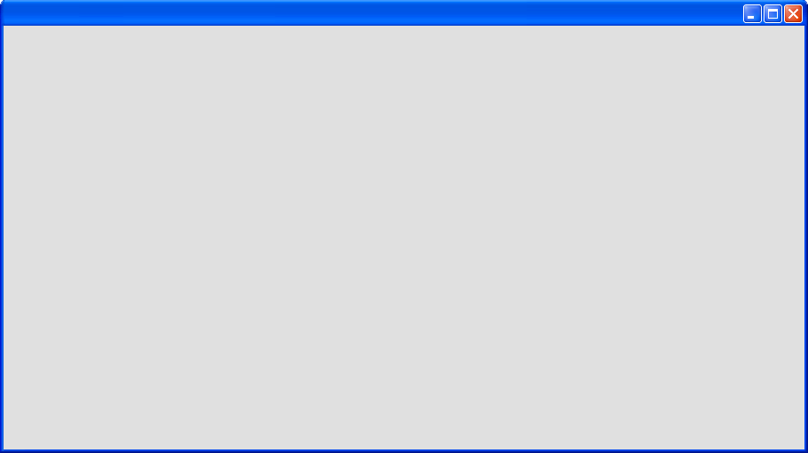
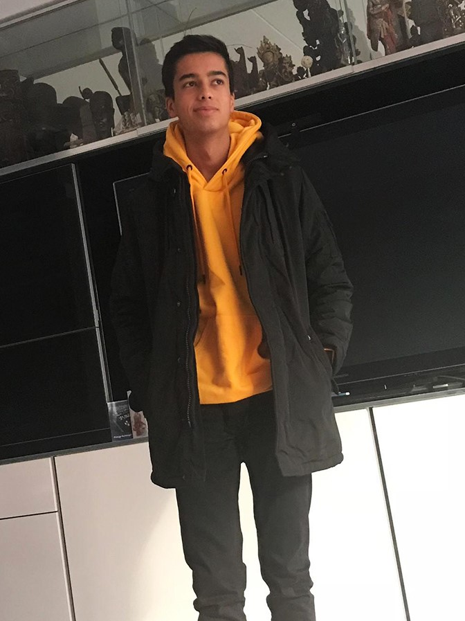

<div id="main-container" class="main-container" cdkDrag>

<!--  image of windows xp window as background of main div-->
  


<!--  container that includes dragging bar div and content container-->
  <div class="info-container">

    <div class="window-bar" cdkDragHandle>
      <h1>Welcome!</h1>
      <div (click)="toEmptyPage()" class="exit-button"></div>
    </div>


<!--    container that will include all content both welcome text and the profile-->
    <div class="content-container">

      <div class="welcome-text">
        <h2>Hello there! Welcome to my Windows XP themed resume website! This website was fully developed by myself so I hope you like it :)</h2>
        <h2>On this website you can read about who I am, my projects, my skills and my contact
          info.</h2>
        <h2>To navigate you can use the icons on the left.</h2>

      </div>

<!--      container purely meant for the profile-->
      <div class="profile-container">

        


<!--        container for all bullet points from the profile-->
        <div class="info-points-container">
          <h1>Samir Rademakers</h1>

          <h2>‍💻: Software Engineer</h2>

          <mat-divider></mat-divider>
          <h2>📖: Technical Computer Science</h2>

          <mat-divider></mat-divider>
          <h2>🎓: Avans Hogeschool Breda, Bachelor Degree</h2>

          <mat-divider></mat-divider>
          <h2>🎁: 26/09/2002</h2>

          <mat-divider></mat-divider>
          <h2>🗣️: Dutch & English</h2>

          <mat-divider></mat-divider>
          <h2>📍: Breda, The Netherlands</h2>

          <mat-divider></mat-divider>
          <h2>📧: Samir.rademakers@gmail.com

          </h2>
          <mat-divider></mat-divider>

        </div>

      </div>

    </div>

  </div>

</div>
